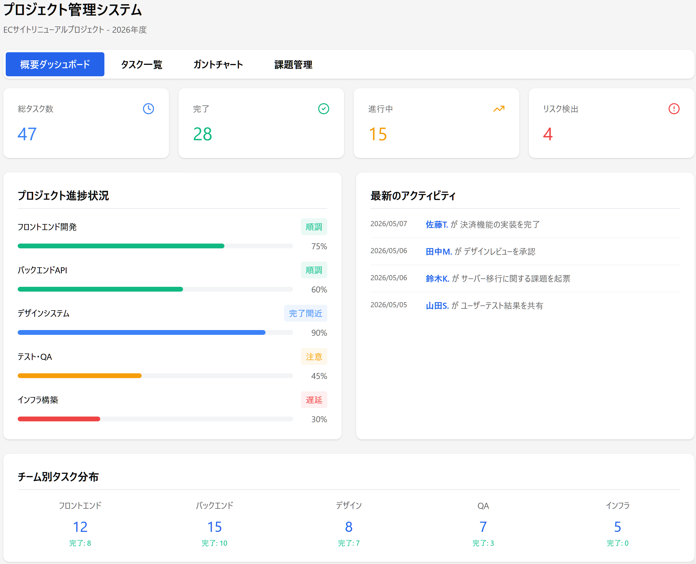
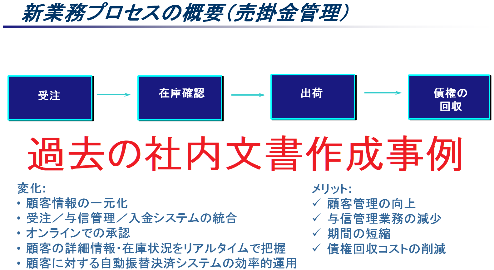

ビジネスの課題を、デザインと論理で解く。
コンサルティングファームで培ったビジネスリテラシー、海外勤務・留学経験に裏打ちされた確かな英語力、更にWeb制作スキルを融合。成果に直結するデザインとディレクションを実践します。
Works
プロジェクト管理ダッシュボード作成例

進捗可視化とリスク管理。PM業務における効率的かつ透明性の高い管理手法の実践。
業務プロセス最適化資料

複雑な情報を整理し、意思決定を加速させるドキュメント作成力。
About
コンサルタント × エンタメ運営 × 翻訳者
多様なバックグラウンドを持つ「ハイブリッド人材」として、複雑な要件を整理し、チームを円滑に進行させる力があります。特に「複雑なドキュメントの正確な作成力」と「多国籍なチームとの連携力」は、フルリモート環境での業務において最大の強みです。
Skills
- Design: Figma, Adobe CC
- Development: HTML, CSS, JavaScript, GitHub Pages
- AI Strategy: Vibe Coding（生成AIを効率化のパートナーとしつつ、ロジックの自律的な検証・修正を徹底）
- Business: 英語力（ビジネスレベル）、 プロジェクトマネジメントスキル、 高度なドキュメンテーション能力